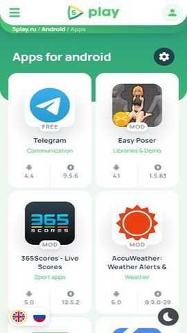

用5play从零装完第一个第三方APK——避坑实记
2兆体积的轻量应用市场，装完、授权、核对签名一套下来，能把第三方市场的四个高频翻车点都绕过去
读完这篇教程，你能用5play官网提供的客户端，把第一个第三方APK从下载到装完、再到安全核对一套走完，不会卡在"未知来源""签名不匹配"这些老问题上。
准备工作：三样东西先确认
动手之前花一分钟确认这几点，能省后面半小时的排查：
- 手机系统版本：5play不需要GMS（谷歌移动服务），但你的安卓版本得在7.0以上。老版本（6.0及以下）虽然能装客户端，但部分应用下载通道会不兼容
- 内部存储预留：装5play客户端本身只要2.12MB，但你下的APK要占一份、安装解压还要一份，预留至少500MB内部空间最稳妥——别想着下到SD卡，第三方市场默认都往内部存
- 浏览器或文件管理器：你用什么工具下5play的安装包，一会儿就得给那个工具开"未知来源"权限。大多数人是Chrome或系统自带浏览器，记一下名称就行
第一步：下载并安装5play本身
5play的官方源在俄语区，国内访问会慢甚至打不开，建议直接从官方下载拿安装包。装的时候会遇到第一个弹窗：
"出于安全考虑，禁止安装此来源的未知应用"
别急——这是正常的，不是APK有问题。Android 8.0之后系统不再有全局的"允许未知来源"开关，改成按应用授权。你用Chrome下的，就得给Chrome开权限；用ES文件管理器点的，就得给ES开。具体路径各ROM不一样：
| ROM品牌 | 路径 |
|---|---|
| 原生/小米/OPPO/vivo | 设置 → 应用 → 特殊权限 → 安装未知应用 |
| 华为HarmonyOS | 设置 → 搜索"未知应用"直接跳 |
最快的方式就是在设置顶部搜"未知应用"，90%的ROM能直接搜到那个设置页。找到之后打开对应应用的开关，回去点安装就行。
装完5play自己之后，别忘了再给5play开一次同样的权限——5play自己也是"下载来源"，你在它里面点下载装应用，系统会识别出是5play在请求安装，所以还要给5play自己开"安装未知应用"这道闸。
这里新手最容易翻车：装完5play就跳过这步，然后在5play里下应用时点安装又弹"禁止安装"，以为5play坏了。不是的，就是少开了一次权限。
第二步：在5play里找你要的应用
打开5play，首页就是分类推荐、新游速递这些板块，和常规应用市场布局差不多。搜索框在顶部，输应用名就能搜——俄语区起源所以默认是俄语界面，第一次进会弹语言选择，切到中文就行。
搜到目标应用之后，进详情页别急着点下载，先看三样东西：
应用图标和名称：确认不是仿冒的。有些恶意APK会起和热门应用相似的名字（比如"Telegram+"冒充"Telegram X"），图标也仿得很像，但仔细看还是有差异
版本号：打开Google Play网页版对比一下。如果Play上是3.x而5play上还是1.x，说明这个条目抓取太久没更新，先跳过；版本号接近（比如Play上2.0.25、5play上2.0.23）是正常的同步延迟
签名校验：在详情页底部的安全扫描区块找这行——"与Google Play签名一致"是原版放心下、"签名不同（修改版）"是MOD版正常状态（MOD必然重签名），但如果显示"签名不同（未知来源）"就别碰了，审核没标记来源。签名校验的完整解读和各种边界情况在5play文档里有一张对照表。

第三步：下载并安装目标APK
点下载之后5play会拉取APK，速度取决于镜像节点。如果下载特别慢、或者多次断开，建议先取消再重新点下载——5play会自动换一个镜像节点重新拉，比硬等靠谱。
下载完成后点安装，这时候系统又会弹一次权限请求——这次是5play自己在请求安装权限，刚才第二步你已经给5play开过了对吧？直接点确认就行。
如果这一步报"签名不匹配""应用未安装""无法覆盖安装"，说明你手机上已经装了同一个包名但签名不同的版本（比如从Play装的原版，现在想装MOD版）。Android安全机制决定只有签名相同才能覆盖安装，签名不同必须先卸载旧版再装。卸载之前记得在应用内部做云端备份——聊天记录、游戏存档这些会跟着卸载清掉。
装完之后，建议花30秒做最后一道检查：对比一下刚装的应用内部版本号和5play详情页上标的是不是大致对得上，APK文件大小和详情页显示的体积差是不是在±10%以内。这两道检查能挡住99%的下载损坏或条目错乱问题。
三个新手高频卡点的速解
卡点一：装完5play但在里面下应用装不上——回到系统设置，找到"安装未知应用"那一栏，看看5play的开关是不是打开了。90%的概率就是没开
卡点二：下载进度条一直卡着不动——先取消，再重新点下载。5play的下载通道有多镜像，重新点会换节点；还不行的话试试切界面语言（英语或俄语），不同语言对应的下载通道可能不同
卡点三：存储空间明明够但报"Internal storage full"——别忘了APK下载占一份、安装解压还要占一份，100MB的应用实际要预留至少300MB空间。去设置→存储里看看"其他"或"缓存"清一下，或者删几个5play已下载列表里的旧APK
往下还能玩什么
5play的客户端只有2兆，但所有图标、详情、分类都是实时从云端拉的，服务端功能迭代不需要你更客户端。常用的进阶玩法包括：切换不同语言获取不同镜像源、用Package Name Viewer对比APK签名、以及把MOD版应用的APK单独存一份做回退——毕竟5play本身不做历史版本缓存，想留备份得自己存。这套5play相关的应用包我在GitHub、Gitee、GitCode都做了备份，国内访问的话后两者速度更稳。